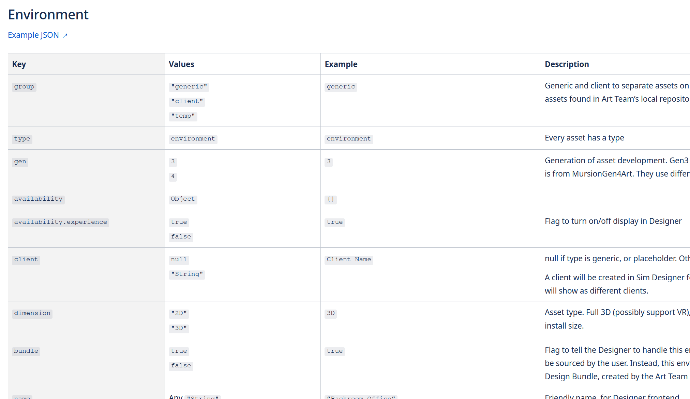
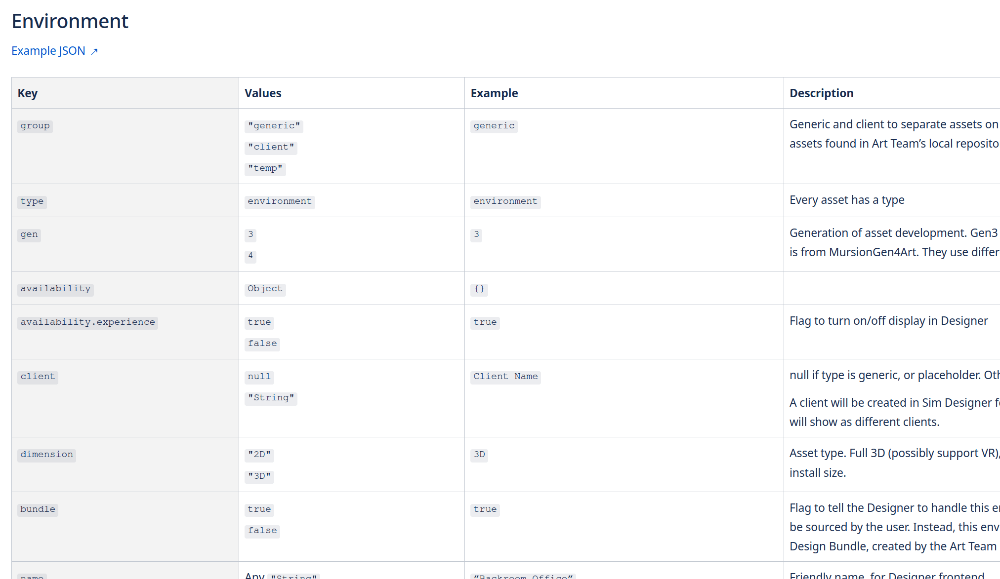

Objectives
- Launch new art configurations faster, to reduce contract timelines
- Pair scenario design with art design, and offload operational work from artists
- Create a database of art assets, with meta information for filtering, customization, and configuration
- Launch a visual library of Mursion artwork, that can be updated quickly without any software deployments
- Lay the groundwork for library APIs to be used across entire product suite
- Create a foundation to eventually empower client users to customize or design their own experiences
 
